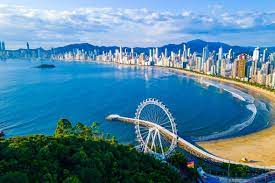

Bem vindo a bela balneario camboriu
Aonde sonhos se realizam

Melhor época para ir a Balneário Camboriú:
são março, abril, maio, outubro, novembro e dezembro.
Isso porque, nestes períodos há uma boa combinação entre clima agradável para pegar praia e cidade menos tumultuada.
Veja agora aqui em baixo dicas para voce!
O Temqueir.com é aonde voce encontrara as melhores opcoes de restaurantes de balneario
Dicas dos melhores restaurantes
No Booking.com voce pode achar os melhores hoteis para o seu bolso
Veja no Booking os melhores hoteis de Balneario Camboriu
O Site da prefeitura de Balneario Camboriu
Prefeitura de Balneario Camboriu